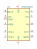
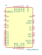

<table>
<tr>
<th>Symbol</th>
<th>Description</th>
</tr>
<tr>
<td><br>HTRC11001T</td><td>Description: HITAG RF Reader Device, SOIC-14<br>Keys: HITAG RFID<br>Datasheet: <a href="https://www.nxp.com/docs/en/data-sheet/037031.pdf">https://www.nxp.com/docs/en/data-sheet/037031.pdf</a></td>
</tr>
<tr>
<td><br>PN5120A0HN1</td><td>Description: NFC frontend.  ISO/IEC 14443A&B, MIFARE, FeliCa and NFC Forum tag types, HVQFN-32<br>Keys: PN512 RFID<br>Datasheet: <a href="https://www.nxp.com/docs/en/data-sheet/PN512.pdf">https://www.nxp.com/docs/en/data-sheet/PN512.pdf</a></td>
</tr>
</table>
